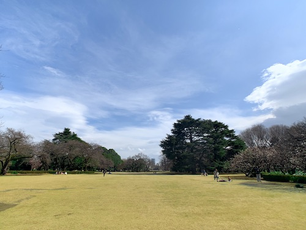
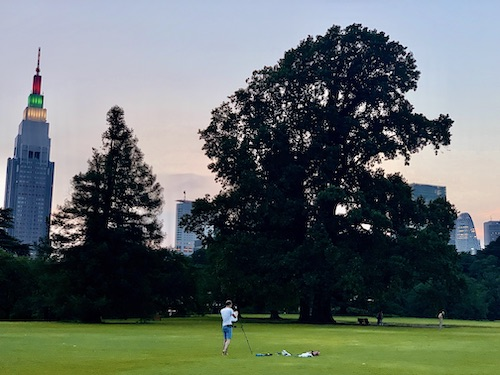

ENGLISH TRADITIONAL GARDEN
HISTORY
In 1898, Hayato Fukuba becomes the general conductor of Shinjyuku Gyoen. At that time, European architecture and gardens were widespread in Japan, and this garden was planned to remake as a Western-style garden. Fukuba asked Henri Martine to make a plan to change this garden into a new style when he went to Paris Expo in 1900, and in the next year, a five-year renovation project began. It was the largest garden project in the Japanese because of the size and the styles of garden.
HOW TO ENJOY
What you can do
- Taking a nap
- Chatting
- Eating like picnic
- Listening to music
- Running / Walking
Prohibited matter
- Drinking alcohol
- Smoking outside the smoking areas
- Use of play equipment (balls, frisbees, and badminton)
- Bring your pet
- Collection of plants
Please enjoy following rules!